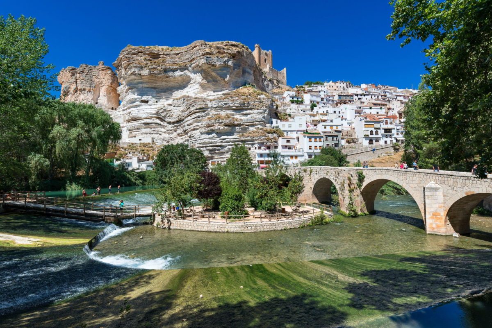
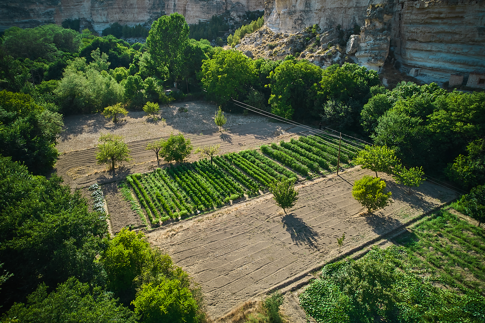

00 — PARAJES
Los caminos que rodean la Manchuela son también parte de nuestra despensa: un paisaje que cambia con las estaciones y que marca lo que se sirve en la mesa.
Entre los valles del Júcar y el Cabriel crecen las plantas silvestres, los frutos y las hierbas que recogemos junto a nuestros productores, siempre respetando su tiempo natural.
Cada paraje que visitamos tiene una historia que contar: un olivo centenario, un cauce que se seca en verano, un carrascal que da cobijo a la caza. Todo eso también se cocina.

HUERTO
El huerto es el origen de nuestra cocina. Un espacio de cultivo, investigación y experimentación donde recuperamos variedades tradicionales, estudiamos su comportamiento y respetamos el ritmo que marca cada estación. Aquí no solo cultivamos ingredientes; construimos una despensa viva que evoluciona con el paisaje y define la identidad de cada temporada en Oba.